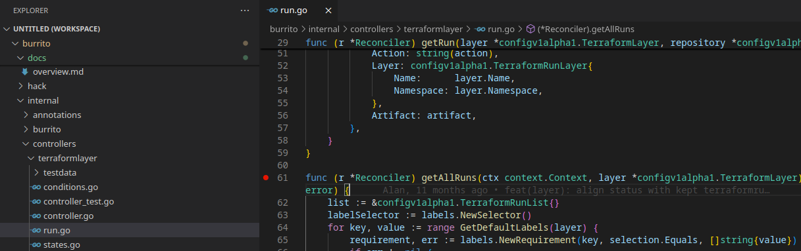
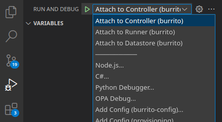
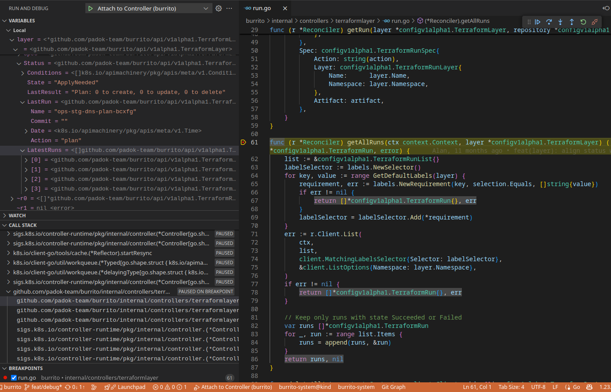

Contributing¶
First off, thank you for considering contributing to Burrito! Your support helps make this project better for everyone.
The following is a set of tutorials and guidelines for contributing to Burrito. These are mostly guidelines, not rules. Use your best judgment, and feel free to propose changes to this document.
How Can I Contribute?¶
Reporting Bugs¶
If you find a bug, please report it by opening an issue on the issue tracker. Before reporting, please check whether the issue has already been reported.
- Ensure the bug hasn't been reported yet.
- Use a clear and descriptive title.
- Provide detailed steps to reproduce the issue.
- Include any relevant logs or screenshots.
Suggesting Enhancements¶
We welcome suggestions for improvements. Please use the issue tracker to submit enhancement requests.
- Use a clear and descriptive title.
- Explain why this enhancement would be useful.
- Provide examples or mockups if possible.
Contributing Code¶
- Set up a development environment following the steps below.
- Read the Development Guidelines.
- Submit contributions!
Getting Started: Set Up a Local Development Environment (kind)¶
Prerequisites¶
To run an instance of Burrito, you will need a Kubernetes cluster. This tutorial uses Kind as a local development Kubernetes cluster.
Follow Kind's quick start tutorial to set up a local cluster.
Once your cluster is up and running, follow the next steps to compile and deploy Burrito.
Basic Install¶
Follow these steps to install a minimal working configuration of Burrito on a Kind cluster:
- Cert-manager
- Burrito controllers in the
burrito-systemnamespace - A datastore running with mock storage (in-memory)
- A
TerraformRepositoryand an associatedTerraformLayerresource in theburrito-projectnamespace, pointing to the padok-team/burrito-examples repository
Before starting, check that your local Kind cluster is running and that your context is set to target this cluster.
-
Install cert-manager on your cluster:
-
Fork and clone this repository.
-
Run the following command to build a local image of Burrito, load it into your Kind cluster, and install Burrito with development Helm values:
-
Check that Burrito is running in the
burrito-systemnamespace:The output should be similar to:
-
Create layers and repository resources:
Create a
devdirectory indeploy/charts/burrito/templates/and add adev.yamlmanifest with development resources:apiVersion: config.terraform.padok.cloud/v1alpha1 kind: TerraformLayer metadata: name: my-layer namespace: burrito-project spec: branch: main path: terraform/ repository: name: my-repository namespace: burrito-project --- apiVersion: config.terraform.padok.cloud/v1alpha1 kind: TerraformRepository metadata: name: my-repository namespace: burrito-project spec: repository: url: https://github.com/padok-team/burrito-examples remediationStrategy: autoApply: true terraform: enabled: true opentofu: enabled: false terragrunt: enabled: false -
Refresh your Helm configuration:
-
Check that a runner pod is created for the newly created layer:
The output should be similar to:
Refresh Commands¶
To build a new local image of Burrito, push it into your local Kind cluster, and update the Helm release with the new image tag, run the following:
To refresh the Helm chart with development values, run:
Check the Makefile for more details about these commands.
Advanced Settings¶
Configure a GitHub Token for TENV:
It is strongly recommended to create a GitHub token with no specific rights to bypass the GitHub API rate limiting. Append the following configuration to your development TerraformRepository resources:
Development Guidelines¶
Testing¶
- Write tests for new features or bug fixes.
- Run all tests to ensure existing functionality isn't broken (
make test). - Ensure code coverage remains at the same level or higher.
Commit Messages¶
- Please follow the convention described by Conventional Commits.
- If you don't, the CI pipeline will fail.
Additional Resources¶
- Controller-runtime documentation (Burrito heavily relies on this package)
- Burrito documentation
Debugging Burrito¶
To debug Burrito efficiently in Kubernetes, you can use Delve, optionally with Visual Studio Code (recommended). We have set a few things to help you getting started.
You'll need to follow instructions in Getting Started: Set Up a Local Development Environment (kind) to get a local Kubernetes development instance.
Enable debugging¶
First, being by installing dlv: go install github.com/go-delve/delve/cmd/dlv@latest
We'll rely on deploy/charts/burrito/values-debug.yaml to deploy the configuration to start the debugging session.
By default, the different component debug configs are commented in the Helm values. Indeed, starting the application with dlv server will hang until you connect with the dlv client so it has to be enabled only when you need it.
# config:
# burrito:
# runner:
# command: ["/usr/local/bin/dlv"]
# args: ["--listen=0.0.0.0:2346", "--headless=true", "--accept-multiclient", "--api-version=2", "--log", "exec", "/usr/local/bin/burrito", "runner", "start"]
# controllers:
# deployment:
# mode: Debug
# command: ["/usr/local/bin/dlv"]
# args: ["--listen=0.0.0.0:2345", "--headless=true", "--accept-multiclient", "--api-version=2", "--log", "exec", "/usr/local/bin/burrito", "controllers", "start"]
# datastore:
# deployment:
# mode: Debug
# command: ["/usr/local/bin/dlv"]
# args: ["--listen=0.0.0.0:2347", "--headless=true", "--accept-multiclient", "--api-version=2", "--log", "exec", "/usr/local/bin/burrito", "datastore", "start"]
# server:
# deployment:
# mode: Debug
# command: ["/usr/local/bin/dlv"]
# args: ["--listen=0.0.0.0:2348", "--headless=true", "--accept-multiclient", "--api-version=2", "--log", "exec", "/usr/local/bin/burrito", "server", "start"]
Note
The runner command+args override isn't under runner.deployment as other components as it's not a k8s deployment
Tip
You can also launch burrito with the debug build and override command+args in overrideRunnerSpec in a specific layer you'd like to debug.
By default, we'll start the application with the usual command. If you want to debug the controller or the runner, uncomment the required block. This will open a port on the pod on which you'll connect from your computer.
mode: Debug is removing liveness and readiness probes: they won't be able to start as dlv will await for you to start the debugging session.
Deploy/refresh commands¶
You'll need to deploy the debug container images and config. This is the same command if you need to refresh your deployment.
To build a new local debug image of Burrito, push it into your local Kind cluster, and update the Helm release with the new image tag, run the following:
To refresh the Helm chart with debug values, run:
Check the Makefile for more details about these commands.
Connect from your computer to the debug session¶
The debugging port won't be exposed by default so you'll need to port-forward it.
- For the controller:
kubectl port-forward $(kubectl get pods -n burrito-system | awk '/burrito-controllers.*Running/{print $1}') -n burrito-system 2345:2345
- For the runner:
It will listen on the same port than the controller so we're exposing it on port 2346 on your computer so you can debug the controller and the runner if needed.
- For the datastore:
kubectl port-forward $(kubectl get pods -n burrito-system | awk '/burrito-datastore.*Running/{print $1}') -n burrito-system 2347:2347
- For the server:
kubectl port-forward $(kubectl get pods -n burrito-system | awk '/burrito-server.*Running/{print $1}') -n burrito-system 2348:2348
Start debugging¶
With vscode¶
Note
You can get more information about Vscode+Go debugging here
If you want to use Vscode to debug the app, you'll need to get the Go extension and create a .vscode/launch.json:
{
"version": "0.2.0",
"configurations": [
{
"name": "Attach to Controller",
"type": "go",
"request": "attach",
"mode": "remote",
"port": 2345,
"host": "127.0.0.1",
"apiVersion": 2
},
{
"name": "Attach to Runner",
"type": "go",
"request": "attach",
"mode": "remote",
"port": 2346,
"host": "127.0.0.1",
"apiVersion": 2
},
{
"name": "Attach to Datastore",
"type": "go",
"request": "attach",
"mode": "remote",
"port": 2347,
"host": "127.0.0.1",
"apiVersion": 2
},
{
"name": "Attach to Server",
"type": "go",
"request": "attach",
"mode": "remote",
"port": 2348,
"host": "127.0.0.1",
"apiVersion": 2
}
]
}
New to debugging on Vscode?
For a vscode debug introduction, you can check Debug code with Visual Studio Code.
Browse your code to set breakpoints by clicking on the left side of your line.

Open the Run and Debug pane, select your debugging configuration and hit F5 to connect to the remove dlv.

Once your line is reached, vscode will show you the variables, current stack, etc

With dlv¶
If you prefer to debug on cli, you can connect with dlv connect 127.0.0.1:<debuggingPort> where <debuggingPort> is 2345, 2346, 2347 or 2348, depending on what you're debugging.